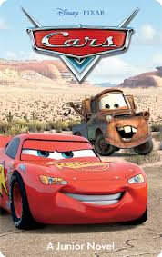
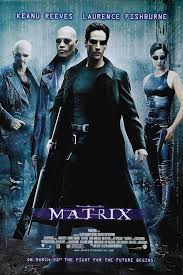

EL TERROR DE FUNVAL
El sitio web donde encontrarás las mejores películas
Top 10 de nuestras mejores Películas
-
Cars
De camino al prestigioso campeonato Copa Pistón, un automóvil de carreras que solo se preocupa por ganar aprende lo que realmente importa en la vida, gracias a los habitantes de un pueblo en la Ruta 66.
-
Son como niños

Un grupo de amigos de la infancia se reencuentra tras muchos años para pasar un fin de semana lleno de diversión, locuras y recuerdos familiares.
-
Avengers: Endgame

Tras los eventos devastadores de Infinity War, los Vengadores restantes se reúnen una vez más para revertir las acciones de Thanos y restaurar el universo.
-
Matrix
Thomas Anderson, un joven programador, descubre que el mundo en el que vive es una simulación creada por máquinas para controlar a los humanos.
-
Dragon Ball Z: La Batalla de los Dioses
Gokú y sus amigos enfrentan a Bills, el Dios de la Destrucción, en una batalla que podría cambiar el destino del universo.
-
Recuerda a los Titanes
Basada en una historia real, narra la integración racial en un equipo de fútbol americano en Virginia en los años 70, destacando el poder del deporte para unir.
-
Shrek
Un ogro solitario se embarca en una misión para rescatar a una princesa, pero termina descubriendo el verdadero amor y el valor de la amistad.
-
Avatar
En el mundo de Pandora, un ex-marine se une a los Na’vi en una lucha por proteger su hogar de los humanos que buscan explotar sus recursos.
-
El Señor de los Anillos: La Comunidad del Anillo
Frodo Bolsón hereda un anillo mágico que debe ser destruido para evitar que caiga en las manos del malvado Sauron, comenzando una épica travesía.
-
El Conjuro
Los investigadores paranormales Ed y Lorraine Warren enfrentan un caso aterrador de una familia acosada por una presencia demoníaca en su casa.